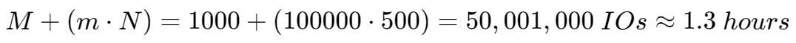
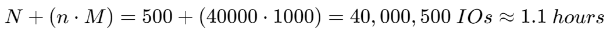
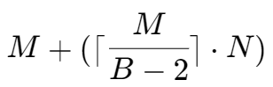
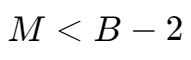
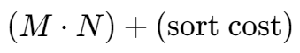

Join Algorithms
Operation Output
Early Materialization
定义：在 Early Materialization,,中，数据库会在 JOIN 操作过程中尽早地将中间结果物化（即实际存储到临时表或内存中）。这意味着在完成部分 JOIN 步骤后，数据库会立即生成一个中间结果集，并将其存储下来。
优点：
- 可以减少后续操作中的计算量，因为一些数据已经被提前过滤或聚合了。
- 对于某些查询，可以提高性能，尤其是在 JOIN 后的数据集比原始表小很多的情况下。
缺点：
- 需要额外的存储空间来保存中间结果。
- 如果中间结果非常大，可能会导致大量的 I/O 操作，从而降低性能。
- 在某些情况下，可能会产生不必要的物化步骤，如果这些中间结果随后被大量过滤掉的话。
Late Materialization
定义：在 Late Materialization,,中，数据库会尽量延迟物化过程，直到 JOIN 操作的最后阶段才生成最终的结果集。这意味着在 JOIN 的过程中，尽可能保持数据流式处理，只在必要时才进行物化。
优点：
- 减少了中间结果的存储需求，节省了存储空间。
- 可以更有效地利用缓存，因为在整个 JOIN 过程中，数据可以一直保留在内存中而不必写入磁盘。
- 有助于优化器更好地选择执行计划，因为它可以看到完整的逻辑结构。
缺点：
- 如果 JOIN 操作非常复杂或者涉及的数据量非常大，流式处理可能会增加 CPU 的负担。
- 在某些情况下，可能需要多次扫描相同的表，这可能导致性能下降。
Early Materialization & Late Materialization
Cost Analysis Criteria
Assume:
- M pages in table R, m tuples in R
- N pages in table S, n tuples in S
使用 IO 次数来衡量开销,,
Join VS Cross-Product
R⨝S is the most common operation and thus must be carefully optimized.
R×S followed by a selection is inefficient because the cross-product is large.
There are many algorithms for reducing join cost, but no algorithm works well in all scenarios.
Join Algorithms
Nested Loop Join
对于数据量小的时候（比如内存可以完全容纳），直接使用嵌套循环进行 Join 操作的开销通常也可接受。
Pseudo-code for R⨝S:
foreach tuple r ∈ R: // outer table
foreach tuple s ∈ S: // inner table
if r and s match then emit
Cost: M + (m ∙ N)
笔记
这里的开销计算以没有页缓存为前提。
这里将表 R 看做 outer table，S 看作 inner table。
这里的 M 由外层遍历产生，为遍历 R 的每一个 tuple，需要 M 次。
在读取 R 中的一个 page 之后，遍历其中的 tuple，对每个 tuple，都遍历一遍 S 中的每一个 tuple 进行比较。
遍历 S 中的 tuple 需要进行 N 次 IO，即需要读取 S 的每一个 page。
由于 R 中有 m 个 tuple，故需要遍历 m 次 S 中的 tuple。
Optimization
Example database:
- Table R: M = 1000, m = 100,000
- Table S: N = 500, n = 40,000
- 0.1 ms / IO
R as outer table, S as inner table:

S as outer table, R as inner table:

通过使用数据量更小的表作为 outer table，可以一定程度优化 Join 计算性能。
Naive Nested Loop Join
Pseudo code:
foreach block B_R ∈ R:
foreach block B_S ∈ S:
foreach tuple r ∈ B_R:
foreach tuple s ∈ B_s:
if r and s match then emit
Cost: M + (M ∙ N)
在 Nested Loop Join 中，对每个 outer table 中的 tuple 都遍历一遍 inner table。
在 Block Nested Loop Join 中，则变为对每个 outer table 中的 page 都遍历一遍 inner table，从而减少对 inner table 遍历的次数，减少总的 IO 次数。
和 Nested Loop Join 中相同，使用数据量更小的表作为 outer table。
Optimization
假设缓存池,,中可以容纳 B 个 page。
- outer table 中的 page 使用 B - 2 个 buffer page
- inner table 中的 page 使用 1 个 buffer page
- 计算结果使用 1 个 buffer page
Pseudo-code:
foreach B - 2 pages p_R ∈ R:
foreach page p_S ∈ S:
foreach tuple r ∈ B - 2 pages:
foreach tuple s ∈ p_s:
if r and s match then emit
Cost: 
一种理想情况
如果缓存池中能够容纳 outer table，即 
Cost: M + N
Block Nested Loop Join
Pseudo-code:
foreach tuple r ∈ R:
foreach tuple s ∈ Index(r_i = s_j):
if r and s match then emit
Assume the cost of each index probe is some constant C per tuple.
Cost: M + (m ∙ C)
注：对于一张表，比较常用的索引为 B+ 树
Index Nested Loop Join
Sort-Merge Join
Phase #1: Sort (排序阶段)
- 目的：确保两个参与连接的表都基于它们的连接键进行了排序。
- 过程：对每个表中的数据根据一个或多个指定的连接键进行排序。可以使用任何适合的排序算法来完成这一步骤，比如快速排序、堆排序等。
- 注意事项：这个排序过程是独立于外部归并排序（external merge sort）的排序/合并阶段的。也就是说，这里提到的排序是指为了准备执行Sort-Merge Join而特别进行的步骤，并不是指在其他上下文中可能发生的排序操作。
Phase #2: Merge (合并阶段)
- 目的：通过遍历两个已经排好序的表来找到匹配的记录，并输出这些匹配的结果。
- 过程：
- 使用游标（cursor）分别指向两个已排序表的开始位置。
- 比较当前游标所指向的记录的连接键值。
- 如果两个游标的键值相等，则找到了一条匹配记录；将此记录组合起来作为结果集的一部分，并同时移动两个游标到下一个位置。
- 如果某个游标的键值小于另一个，则仅移动具有较小键值的那个游标，直到找到相等的键值或达到该表的末尾。
- 根据不同的连接类型（如内连接inner join、左外连接left outer join等），可能需要处理不匹配的情况。例如，在执行左外连接时，如果右表没有与之对应的行，则仍然需要输出左表的行，此时可能会涉及到回溯（backtracking）以正确构造输出行。
过程
Pseudo-code:
sort R,S on join keys
cursor_R ← R_sorted, cursor_S ← S_sorted
while cursor_R and cursor_S:
if cursor_R > cursor_S:
increment cursor_S
if cursor_R < cursor_S:
increment cursor_R
backtrack cursor_s (if necessary)
elif cursor_R and cursor_S match:
emit
increment cursor_S
Cost:
- Sort Cost (R): 2M ∙ (1 + ⌈ logB-1 ⌈M / B⌉ ⌉)
- Sort Cost (S): 2N ∙ (1 + ⌈ logB-1 ⌈N / B⌉ ⌉)
- Merge Cost: (M + N)
- Total Cost: Sort + Merge
参与 Join 运算的两张表的连接属性,,已经被排序好。
理想情况
最坏情况即为两个关系（表）中的所有元组（行）的连接属性,,都具有相同的值。
在这种情况下，Sort-Merge Join 算法需要对每一个来自第一个表的元组与第二个表中的每一个元组进行比较。因为所有的连接键都是相同的，所以算法不能跳过任何一行来寻找下一个不同的键值；它必须检查每一对可能的组合。
Cost: 
最坏情况和开销
Hash Join
Phase #1: Build (构建阶段)
使用哈希函数 h1，扫描 outer table，对每一个 tuple 的 join attribute 进行哈希运算后使用哈希值将该 tuple 插入哈希表。
使用线性探测,,哈希表往往效果更好。
Phase #2: Probe (探测阶段)
扫描 inner table，通过每一个 tuple 的 join attribute 的哈希值在哈希表中找到对应的 outer table 中的匹配项
Pseudo-code:
build hash table HT_R for R
foreach tuple s ∈ S
output, if h_1(s) ∈ HT_R
哈希表键和值的内容
Key: The attribute(s) that the query is joining on
- The hash table needs to store the key to verify that we have a correct match, in case of hash collisions.
Value: It varies per DBMS
- Depends on what the next query operators will do with the output from the join
- Early vs. Late Materialization
Optimization: Probe Filter
在 Build 阶段为 outer table 构建一个 filter，如 Bloom Filter，在对哈希表查询时，先对 filter 查询。
- Check the filter before probing the hash table
- Fast because the filter fits in CPU cache
- Sometimes called sideways information passing
Simple Hash Join Algorithm
适合在哈希表无法完全存储在内存中时使用。又被称为 GRACE Hash Join。
构建过程
对两个参与 Join 运算的表都使用相同的哈希函数构建各自的分块,,哈希表。
探测过程
将两个表对应的分块哈希表进行逐块的比较，将索引范围相同的块放在一起比较。
Edge Cases
如果在构建中，一个分块的大小大到内存无法容纳，则用另一个哈希函数递归地对其进行分块。
- Repeat as needed
- Eventually hash join the corresponding (sub-)partitions
Cost:
- No recursive partitioning: 3(M + N)
- Partition phase: 2(M + N)
- Read + write both tables
- Probe phase: M + N
- Read both tables (in total, one partition at a time)
Optimization: Hybrid Hash Join
对于键值倾斜（即某一特定键值出现得较为频繁）的表较为有效。
键值倾斜的情况下，特定分块会高频出现匹配项（即热点分块）。可以将热点分块暂存在内存中，并优先进行该分块的匹配。
Difficult to get to work correctly. Rarely done in practice.
Partitioned Hash Join
Hash Join Observations
The inner table can be any size.
- Only outer table (or its partitions) need to fit in memory
If we know the size of the outer table, then we can use a static hash table.
- Less computational overhead
If we do not know the size, then we must use a dynamic hash table or allow for overflow pages.
Summary
| Algorithm | IO Cost | Example |
|---|---|---|
| Naïve Nested Loop Join | M + (m ∙ N) | 1.3 hours |
| Block Nested Loop Join | 0.55 seconds | |
| Index Nested Loop Join | M + (m ∙ C) | Variable |
| Sort-Merge Join | M + N + (sort cost) | 0.75 seconds |
| Hash Join | 3 ∙ (M + N) | 0.45 seconds |